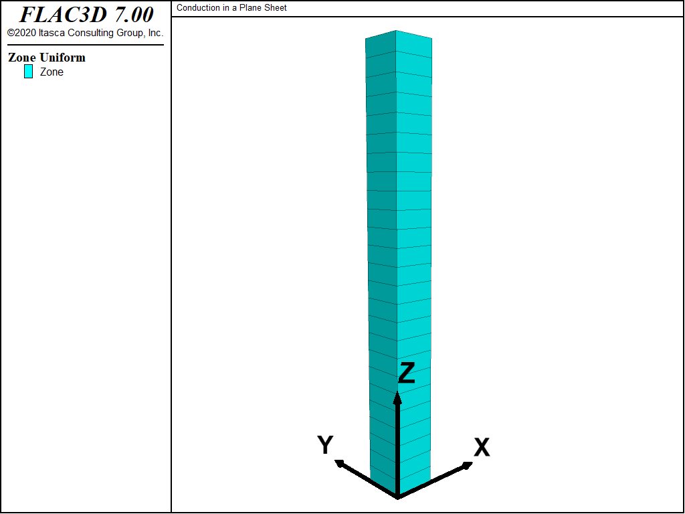
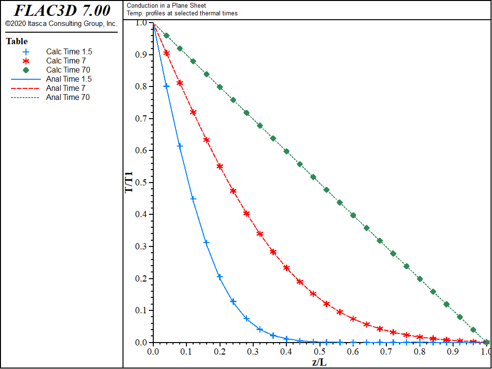

平板中的热传导
注意
要在 FLAC3D 中查看此工程，请使用菜单命令 。选择“Thermal/PlaneSheetConduction”，再选择“PlaneSheetConduction.f3dprj”即可加载。该工程的主数据文件（main data files）在本示例末尾给出。
厚度为 \(L\) = 1 m 的平面板最初处于 0°C 的恒温状态。板的一侧暴露于 100°C 的恒定温度，另一侧保持 0°C。板最终达到恒定热流、温度分布不变的平衡状态。
该问题瞬态温度分布的解析解由 Crank（1975）给出：
其中：
\(T_1\) 为板在 \(z\) = 0 处的固定温度；
\(T_2\) 为板在 \(z\) = L 处的固定温度；
\(L\) 为板的宽度；
\(t\) 为时间；
\(z\) 为穿过板的距离；
\(f(z)\) 为 \(0 < z < L\) 范围内的初始温度分布函数；以及
\(\kappa\) 等于 \(k/({\rho}C_p)\)，其中 \(k\) 为热导率，\(\rho\) 为密度，\(C_p\) 为比热容。
特别地，对于 \(f(z) = T_2\)（本示例中的情形），解变为
本示例的热导率为 1.6 W/m °C，比热容为 0.2 J/kg °C，材料的质量密度为 1000 kg/m3，温度 \(T\) 为 100°C。
解析解编写为 FISH 函数，以便在选定热时刻直接与数值结果进行比较。这些时刻的解析和数值温度结果存储在表格中。
在 FLAC3D 模型中，该板定义为由 25 个网格单元组成的柱体。位于 \(z\) = 0 的面施加 100°C 的恒温边界，位于 \(z\) = 1 的面施加 0°C 的恒温边界。模型网格见图 1（Figure 1）：


图 1：平面板导热的 FLAC3D 网格。
本示例包含 FLAC3D 分别采用显式和隐式格式求解的解。显式解在三个热时刻的解析与数值温度比较见图 2（Figure 2），隐式解的比较见图 3（Figure 3）。两图中绘制的是归一化温度（\((T(z,t)-T_2)/(T_1-T_2)\)）随归一化距离（\(z/L\)）的变化，其中表 2、4、6 包含温度的解析解，表 1、3、5 包含 FLAC3D 解。显式解和隐式解对应的三个热时刻均为 2、12 和 72 秒。两种情形在所考虑的最后一个时刻均已达到平衡热状态。对于两种求解格式，稳态时解析与数值温度之差均小于 0.1%。请注意，对于显式解，时步约为 0.07 秒，而对于隐式解，时步设为 0.1 秒。



图 3：隐式求解算法的温度比较（解析值 = 十字；数值 = 线）。
参考文献
Crank, J. The Mathematics of Diffusion, 2nd Ed. Oxford: Oxford University Press (1975).
数据文件
; 平板中的热传导
; 比较显式与隐式方法
model new
model large-strain off
fish automatic-create off
model title 'Conduction in a Plane Sheet'
model configure thermal
; --- 主计算 ---
zone create brick size 1 1 25 point 1 (0.1,0,0) ...
point 2 (0,0.1,0) point 3 (0,0,1)
; -- 热学模型
zone thermal cmodel isotropic
zone thermal property conductivity 1.6 specific-heat 0.2
zone initialize density 1000
zone face apply temperature 100. range position-z 0.0
zone face apply temperature 0. range position-z 1.0
; 设置
model mechanical active off
model thermal active on
model save 'psheet-ini'
; -- 显式法
; 试验
model solve time-total 1.5
model save 'psheet-exp-015'
model solve time-total 7
model save 'psheet-exp-070'
model solve time-total 70
model save 'psheet-exp-700'
; -- 隐式法
model restore 'psheet-ini'
; 试验——先使用显式法
model solve time-total 1.5
model save 'psheet-exp-015'
; - 再切换为隐式法
zone thermal implicit on
model thermal timestep fix 1.e-1
model solve time-total 7
model save 'psheet-imp-070'
model solve time-total 70
model save 'psheet-imp-700'
program return
| 这些内容对您有帮助吗？… 版权与免责声明 | FLAC3D © 2019, Itasca | 原文更新于 2020 年 10 月 8 日 |